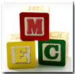

Model Engineering College, Kochi, is a premier institute of engineering that has niched for itself an esteemed name in the field of technical education in a very short span of ten years. The college was spawned in the year 1989, by the Government of Kerala, under the aegis of the Institute of Human Resource Development for Electronics (IHRD).
Situated in Kochi, the economic hub of Kerala, Model Engineering College can boast of an envious growth in the last decade. The College enjoys a good working relationship with Premier Institutions in Kerala like Naval Physical Oceanographics Labs (NPOL), Vikram Sarabhai Space Centre (VSSC), ER&DC, HMT, CDiT etc.
The college is affiliated to the Cochin University of Science and Technology for the award of B.Tech degree in the various disciplines. The college offers specialized courses in Computer Science, Electronics Engineering and Electronics and Biomedical Engineering. Model Engineering College is the only college in India, which offers a specialized stream in Medical Instrumentation. The syllabus for Electronics Engineering is rich in both Communication Technology as well as Industrial Instrumentation. Keeping in pace with the IT era, the Computer Engineering syllabus covers an exhaustive realm of core fields like Operating Systems, Compiler Design, Finite Automata Theory, and Computer Graphics
Model Engineering College houses some of the best technology in its labs. The Electronics department is home to Digital Circuits, Communication, Industrial Instrumentation and Microprocessor Labs. The Electronics and Medical Instrumentation Labs include a Catheterisation Lab, the only one of its kind in the state.
The Computer Labs are distinguished along the lines of the Platforms and Operating Systems used. There is a general Computing Lab for beginners, a UNIX Lab with scores of terminals and finally an Advanced Computing Lab that houses some of the best Hardware and software in the Industry. The ACL houses a Sun SPARC, DEC ALPHA, Silicon Graphics, and scores of fifth generation Pentium machines for the varied computational needs in System design, GUI etc. The syllabus is revised frequently in line with the evolving world of Technology.
This centre of learning is a role model to all the other professional colleges in the state in terms of student discipline and order. Students of the college adhere to a uniform dress code, perhaps a unique first time in the history of any professional college in the state. This has helped create oneness and camaraderie among the students.

|
| Members || Search || Disclaimer || Sitemap || Comments |
Site Powered by  © Copyright 2001 © Copyright 2001 |